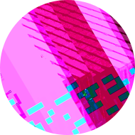
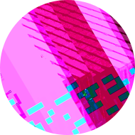
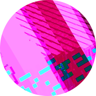

Conways's Game of Life is made up of square cells arranged in a grid. Each cell is either alive or dead.
Devised by the British mathematician John Horton Conway in 1970.
The "game" is actually a zero-player game, meaning that its evolution is determined by its initial state, needing no input from human players. One interacts with the Game of Life by creating an initial configuration and observing how it evolves.
Every turn, cells live, die or are "born" based on these rules:
